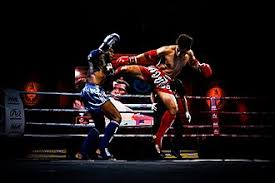
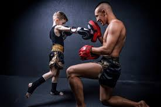

Qu'est-ce que le Muay Thaï ?
Le Muay Thaï, aussi appelé boxe thaïlandaise, est un art martial ancestral originaire de Thaïlande. Il se distingue par l'utilisation des poings, coudes, genoux et pieds, ainsi que par ses valeurs de respect, de discipline et de dépassement de soi.
Dès le plus jeune âge
La pratique du Muay Thaï aide à développer la motricité, la coordination et la confiance en soi. À travers les techniques de base, les enfants apprennent à canaliser leur énergie, à améliorer leur concentration et à se dépasser tout en s’amusant.
Pour les adultes
Le Muay Thaï est un excellent moyen d'améliorer sa condition physique, de se défouler et d'apprendre à se défendre. Nos cours pour adultes sont adaptés à tous les niveaux, que vous soyez débutant ou confirmé. Venez découvrir une discipline complète dans une ambiance conviviale et respectueuse.